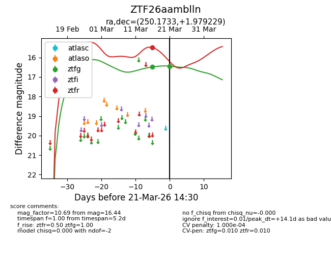
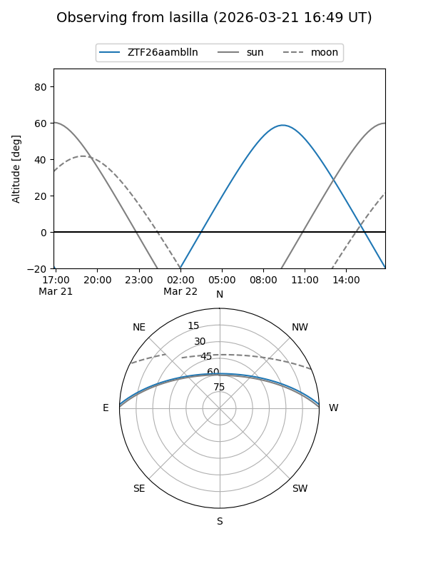
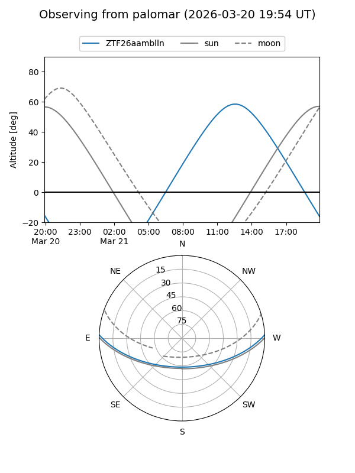
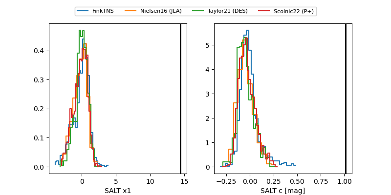

ZTF26aamblln
Target ZTF26aamblln at 2026-03-21 14:32
Aliases and brokers:
FINK: link
Lasair: link
ALeRCE: link
alt names
ZTF26aamblln (ztf,fink_ztf)
Coordinates:
equatorial (ra, dec) = 250.1733,+1.97923
equatorial (HMS+DMS) = 16:40:41.59,+01:58:45.22
galactic (l, b) = (18.5705,+29.74156)
Flags:
likely cv
Photometry:
last ztfg=16.44, ztfr=15.49
2 ztfg, 1 ztfr detections
Lightcurve

Visibility


Additional plots
